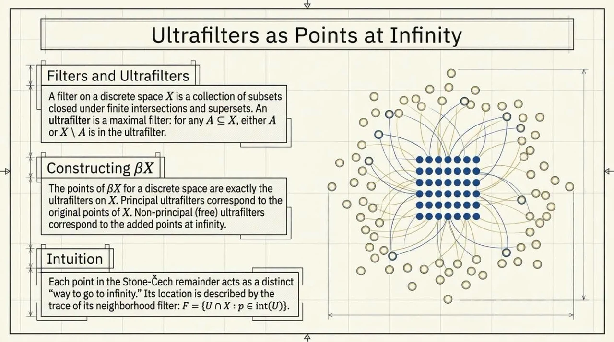
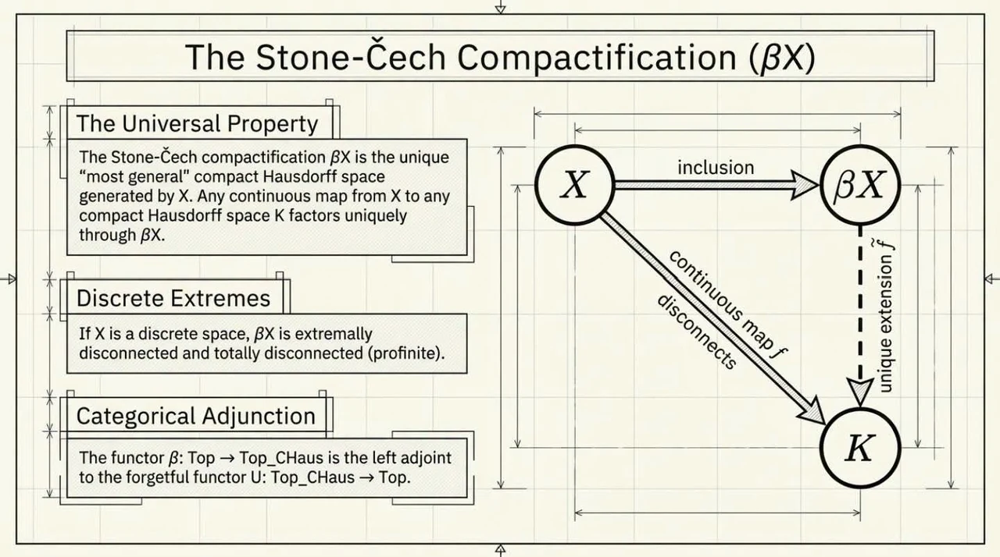

기둥 4 · 끝과 보편 · 22장
무한 끝의 점 — 울트라필터와 스톤-체흐
이산 공간을 가장 넉넉하게 콤팩트로 마무리하기
이산 공간을 가장 넉넉하게 콤팩트로 마무리하기
핵심 질문 — 자연수를 끝없이 따라가는 「방법」마다 점을 하나씩 붙이면, 어떤 공간이 생길까?
08장에서 무한 이산 공간 ℕ = {1, 2, 3, …}은 콤팩트가 아니었어요. 끝에 점을 붙여 콤팩트로 만들 수 있는데, 「얼마나 넉넉하게」 붙일지가 문제예요. 가장 넉넉하게 붙인 것이 스톤-체흐 콤팩트화 βℕ이고, 붙이는 점 하나하나가 울트라필터예요.
숫자 요약은 이 장의 예시 계산에서 나온 값입니다(실제 데이터가 아닌 설명용 값).
찬반 토론이에요. 무한 끝에 점을 몇 개 붙일까?
바람조는 「방법마다 따로」 편! 바람이 부는 방향마다요.
픽셀조는 「하나면 충분」 편이에요. 단순한 게 좋죠.
행렬·벡터, 복잡한 공식을 몰라도 됩니다. 그림을 움직여 보고, 밑줄 친 말을 누르면 뜻이 나옵니다.
이 페이지 사용법: 밑줄 친 말을 누르면 뜻이 나옵니다(Esc로 닫기). 단계마다 그림을 직접 움직여 보고, 끝의 확인 퀴즈로 점검하세요. 앞 장: 21 함자와 짝 — 이산 옷 입히기와 옷 벗기기
픽셀조는 「무한 끝에는 점 하나만 붙이면 충분하다」, 바람조는 「끝으로 가는 방법마다 점을 따로 붙여야 한다」 편이에요. 울트라필터 실험으로 판정합니다.
끝에 점 ∞ 하나만 붙이면 ℕ ∪ {∞}가 콤팩트가 돼요.
그럼 수열 1, 0, 1, 0, …은 끝에서 1이에요 0이에요? 점 하나로는 못 정해요!
그 질문이 바로 오늘의 판정 기준이야.
이산 공간 ℕ은 콤팩트가 아니라 무한을 유한처럼 다루기 어려워요. 끝에 점을 붙여 마무리해요.
βℕ은 다른 어떤 마무리보다 넉넉해서, 모든 마무리가 βℕ에서 내려와요(보편 성질).
βℕ은 아주 끊긴 공간(23장)이에요. 이산의 성질이 끝까지 살아남아요.
오늘은 「무한」이 두 번 나와요(무한 집합, 무한 끝). 점 4개짜리 실험부터 차근차근 가요.
상황 질문 — 학급 회의에서 모든 안건(집합 A)마다 「찬성 쪽이 크다」 또는 「반대 쪽이 크다」를 하나로 정해야 해요. 모순 없이 정하는 규칙이 있을까요?
점 4개 위의 울트라필터가 4개뿐이라는 게 왜 그래요?
학교 수학으로 보면: 중학교 집합의 「포함」과 「교집합」이에요. 유한 집합에서는 큰 집합들을 계속 겹치면 결국 점 하나 {x}에 도달하고, 그 점을 담은 집합이 모두 「큰 집합」이 돼요.
| 식 조각 | 읽는 법 | 뜻 |
|---|---|---|
| F | 에프 | 「큰 집합」 모음 |
| A ∈ F 또는 X \ A ∈ F | 에이 아니면 그 바깥이 크다 | 울트라 조건 |
| F_x = {A : x ∈ A} | 주 울트라필터 | 점 x를 담은 집합이 모두 큼 = 원래 점 x |
X = {1, 2, 3, 4}, 부분집합 모음 후보 2¹⁶ = 65,536가지
세 규칙 + 울트라 조건을 통과하는 것: {1}을 담은 집합 모두, {2}를…, {3}을…, {4}를… → 4개
즉 유한 집합의 울트라필터는 모두 「점 하나에 모이는」 주 울트라필터
ℕ처럼 무한하면 어떤 점에도 모이지 않는 「자유」 울트라필터가 있어요(존재는 선택 공리로 보장)
유한하면 결국 점 하나로 모이는군요. 무한일 때만 「끝의 방향」이 새로 생기고요.
학급 회의에서 모든 안건의 「큰 쪽」을 정하면, 큰 쪽끼리 겹친 것도 크고 큰 쪽을 넓힌 것도 커요. 반 학생 수가 유한하면 결국 「한 사람의 뜻」으로 정해지는 규칙뿐이에요.
울트라필터는 모든 A에 대해 A나 그 바깥 중 하나를 「큼」으로 정한 필터예요. 유한 집합의 울트라필터는 모두 주 울트라필터 F_x(점 x)이고, ℕ에는 자유 울트라필터(무한 끝의 방향)가 있어요.
점 4개 위에서 「큰 집합」 모음을 골라 규칙을 점검해 보세요.
규칙이 많으니 조합도 많겠죠. 수십 개는 될 거예요!
점 하나를 정하면 나머지가 다 정해져. 그래서 딱 4개야.
원자료 「Ultrafilters as Points at Infinity」 위 두 상자.

상황 질문 — 끝없는 들판 끝에 깃발을 꽂는데, 「바람이 부는 방향마다」 따로 꽂는다면 깃발은 몇 개일까요?
바람 방향마다 깃발을 따로 꽂으면, 「짝수 쪽 바람」에서는 수열 1, 0, 1, 0, …이 0으로, 「홀수 쪽 바람」에서는 1로 끝나요.
스톤-체흐 콤팩트화 βℕ의 점은 ℕ의 울트라필터예요. ℕ에서 콤팩트 하우스도르프 공간 K로 가는 모든 함수 f는 βℕ으로 하나뿐인 연속 확장 f̃를 가져요(보편 성질). β는 망각 함자의 왼쪽 짝이에요(21장과 같은 모양).
「길」을 바꿔 가며 수열 (−1)ⁿ의 끝값을 보세요.
짝수 쪽으로 가면 1, 홀수 쪽으로 가면 −1… 점 하나로는 못 정하네요.
그러니까 방향마다 점을 따로! 바람조 승리!
원자료 「The Stone-Čech Compactification (βX)」의 세 상자와 오른쪽 그림.

모아가 AI에게 「ℕ의 울트라필터 중 원래 자연수가 아닌 것을 하나 구체적으로 적어 주세요」라고 했어요.
「모든 A에 대해 A나 바깥 중 하나」 조건을 집합 하나(4의 배수)로 시험해 보세요. AI의 예시는 조건 하나로 깨지는 경우가 많아요.
{1, 2, 3, 4}의 부분집합 모음 65,536가지를 전부 검사해 울트라필터를 세는 계산배틀!
「딱 4개. 점마다 「그 점을 담은 모든 집합」 하나씩.」
「규칙이 많으니 조합도 많겠죠. 수십 개는 될 거예요!」
누가 맞을지 먼저 예상해 보고 단추를 누르세요. 판정은 계산 결과로만 합니다.
개념정리 흐름: 울트라필터 → 스톤-체흐 콤팩트화
| 개념 | 한 줄 뜻 | 일상 비유 | 비유의 한계 |
|---|---|---|---|
| 필터 | 겹치기·넓히기에 닫힌 「큰 집합」 모음 | 큰 집합 투표 규칙 | ∅은 들어가지 않아요 |
| 울트라필터 | 모든 A에 크다/작다를 정한 필터 | 모든 안건 결정 | 유한 집합에서는 점과 같아요 |
| 스톤-체흐 콤팩트화 | 울트라필터 전체를 점으로 한 가장 넉넉한 콤팩트화 | 바람 방향마다 깃발 | 끝 점은 구체적으로 못 적어요 |
토론 결과: 바람조 승. 끝으로 가는 방향마다 점이 필요했어요.
방향마다 깃발!
점 하나 마무리는 단순하지만 수열 끝값을 못 정하네요. 인정!
다음 장 예고: 23장은 1:1 토론 + 계산이에요. βℕ처럼 「철저히 끊긴」 아주 끊긴 공간과, 유한 층을 끝없이 쌓은 프로유한 공간 ℤ_p를 비교해요.